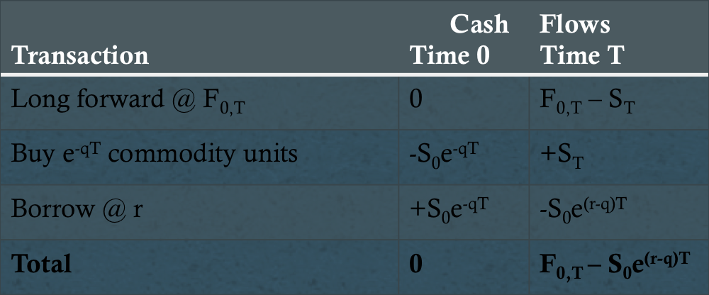

Introduction
- F0,T = S0e(r-q)T
- Forward curve/forward strip
Equilibrium Pricing
- Synthetic commodities
- Long forward/long bond: ST - F0,T + F0,T = ST
- F0,T = E0(ST)e(r-a)T
Lease Rate
Compensation required by an investor in exchange for lending a commodity (cost of borrowing)
- F0,T = S0e(r-q)T
- q = r - (1/T)ln(F0,T/S)
- 1 = (1 + r)/(F0,T/S)1/T - 1
Cash-and-Carry Arbitrage

Reverse Cash-and-Carry Arbitrage

Carry/Storage Costs
- Sell today or sell tomorrow?
- Compare PV of selling at time T with spot price
- Indifference point: S0 = e-rT[F0,T - λ(0,T)]
- F0,T ≥ S0erT + λ(0,T)
- F0,T = S0e(r+λ)T + λ(0,T)
Convenience Yield
Definition: Extra nonmonetary return that is generated by holding an asset
- Business reasons for holding a commodity
- No-arbitrage region
- S0e(r+λ)T ≥ F0,T ≥ S0e(r+λ-c)T
Commodity Spreads
Commodities are often used as inputs in the creation of other commodities
- Soybeans -> soybean meal/oil (crush spread)
- Crude oil -> petroleum products (crack spread)
Hedging Strategies
- Basis risk
- Strip hedge
- Stack hedge